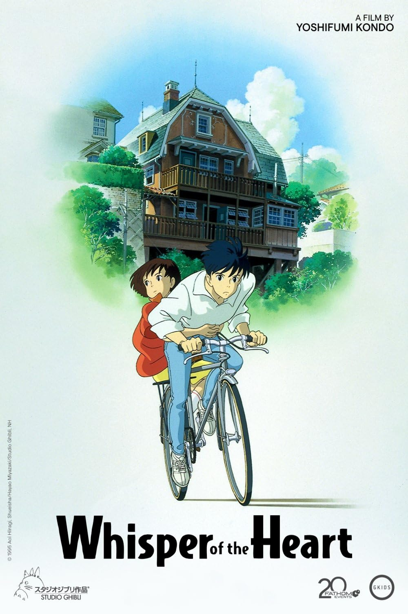
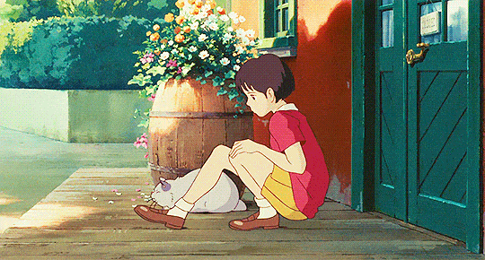
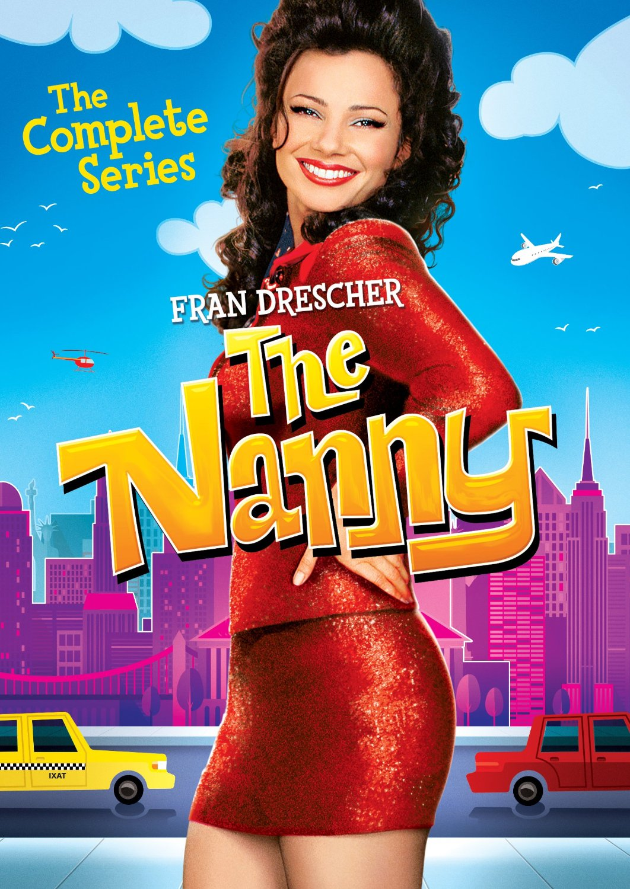
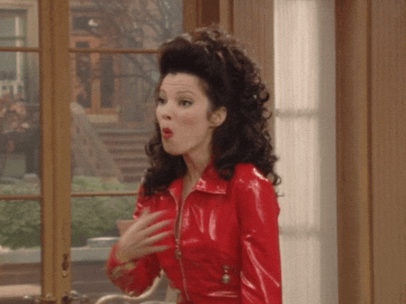

| POSTER |
MOVIE / DRAMA / ANIME |
FAVOURITE CHARACTER |
 |
DETECTIVE CONAN
- Since 1996 - now
- A Japanese detective manga series written and illustrated by Gosho Aoyama
- The manga was adapted into an anime television series by Yomiuri Telecasting Corporation and TMS Entertainment
- Main characters: Edogawa Conan, Kudo Shinichi, Mouri Ran
|
|
|  |
WHISPER OF THE HEART
- Since 1995
- A Japanese animated romantic drama film directed by Yoshifumi Kondō and written by Hayao Miyazaki
- It was animated by Studio Ghibli for Tokuma Shoten, Nippon Television Network and Hakuhodo
- Main characters: Tsukishima Shizuku, Amasawa Seiji
|
 |
 |
THE PARENT TRAP
- Since 1998
- An American romantic comedy film directed by Nancy Meyers in her directorial debut
- It is a remake of the 1961 film of the same name and an adaptation of Erich Kästner's Lisa and Lottie (Das doppelte Lottchen)
- Main characters: Annie James, Hallie Parker
|
 |
|  |
THE NANNY
- Since 1993 - 1999
- An American sitcom that originally aired on CBS
- The sitcom was the first new show delivered to CBS for the 1993 season and the highest-tested pilot at the network in years
- Main characters: Fran Fine, Maxwell Sheffield, Niles
|
 |
|
YOUNG SHELDON
- Since 2015 - 2024
- An American coming-of-age sitcom television series created by Chuck Lorre and Steven Molaro
- The series is a spin-off prequel to The Big Bang Theory that takes place during the late 1980s and early-to-mid-1990s
- Main characters: Sheldon Cooper, Mary Cooper, George Cooper
|
|